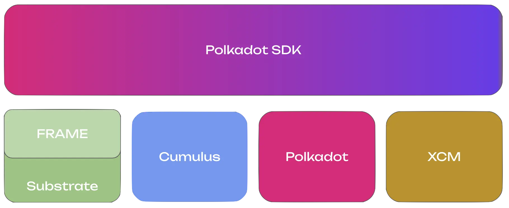

<!DOCTYPE html>
<html lang="en">

<head>
  <meta charset="utf-8" />
  <meta name="viewport" content="width=device-width, initial-scale=1.0, maximum-scale=1.0, user-scalable=no" />

  <title>Polkadot SDK & Tools</title>
  <link rel="icon" href="./../../assets/favicon.svg" />
  <link rel="shortcut icon" href="./../../assets/favicon.png" />
  <link rel="stylesheet" href="./../../dist/reset.css" />
  <link rel="stylesheet" href="./../../dist/reveal.css" />
  <link rel="stylesheet" href="./../.././assets/styles/PBA-theme.css" id="theme" />
  <link rel="stylesheet" href="./../../css/highlight/shades-of-purple.css" />

  <link rel="stylesheet" href="./../.././assets/styles/custom-classes.css" />

</head>

<body class="site">
  <header class="site-header">
    <!-- This logo is a link only on the watching server, not the production build -->
    <a href="">
      
    </a>
  </header>
  <main class="reveal">
    <article class="slides">
      <section  data-markdown><script type="text/template">

# Polkadot SDK & Tools
</script></section><section  data-markdown><script type="text/template">
# Polkadot SDK & Tools

## Polkadot Ecosystem Disclaimer
</script></section><section  data-markdown><script type="text/template">
# Polkadot Website

https://polkadot.com/
</script></section><section  data-markdown><script type="text/template">
# Polkadot SDK



Repo: https://github.com/paritytech/polkadot-sdk

Docs: https://docs.polkadot.com/
</script></section><section  data-markdown><script type="text/template">
# Polkadot Fellowship Repo

- RFCs
- Relay Chain Runtimes

https://github.com/polkadot-fellows
</script></section><section  data-markdown><script type="text/template">
# Networks

Polkadot > Kusama > Paseo > Westend
</script></section><section  data-markdown><script type="text/template">
# APIs

https://docs.polkadot.com/develop/toolkit/api-libraries/

PJS Dashboard: https://polkadot.js.org/apps/

PAPI Dashboard: https://dev.papi.how/explorer
</script></section><section  data-markdown><script type="text/template">
# Governance

Site: https://polkadot.com/platform/dao/

Dashboard: https://polkadot.polkassembly.io/
</script></section><section  data-markdown><script type="text/template">
# Wallets

Site: https://polkadot.com/get-started/wallets/
</script></section><section  data-markdown><script type="text/template">
# Staking

Site: https://polkadot.com/get-started/staking/

Dashboard: https://staking.polkadot.cloud/#/overview
</script></section><section  data-markdown><script type="text/template">
# Agile Coretime (Cloud)

https://hub.regionx.tech/?network=polkadot

https://www.deploypolkadot.xyz/
</script></section><section  data-markdown><script type="text/template">
# Smart Contracts (Hub)

Solidity: https://docs.polkadot.com/tutorials/smart-contracts/launch-your-first-project/

Rust based SCs with Ink!: https://use.ink/
</script></section><section  data-markdown><script type="text/template">
# Testing

Zombienet: https://github.com/paritytech/zombienet

Chopsticks: https://docs.polkadot.com/develop/toolkit/parachains/fork-chains/chopsticks/
</script></section><section  data-markdown><script type="text/template">
# DApps:

https://polkadot.com/get-started/dapps/
</script></section><section  data-markdown><script type="text/template">
# Bridges:

https://polkadot.com/get-started/bridges/
</script></section><section  data-markdown><script type="text/template">
# DEXs

Hydration: https://hydration.net/
</script></section><section  data-markdown><script type="text/template">
# Community

Wiki: https://wiki.polkadot.com/

Docs: https://docs.polkadot.com/

Stack Exchange: https://substrate.stackexchange.com/

Polkadot Forum: https://forum.polkadot.network/

Kusamarian YT Coverage: https://www.youtube.com/@TheKusamarian
</script></section>
    </article>
  </main>

  <script src="./../../dist/reveal.js"></script>

  <script src="./../../plugin/markdown/markdown.js"></script>
  <script src="./../../plugin/highlight/highlight.js"></script>
  <script src="./../../plugin/zoom/zoom.js"></script>
  <script src="./../../plugin/notes/notes.js"></script>
  <script src="./../../plugin/math/math.js"></script>

  <script src="./../../assets/plugin/mermaid.js"></script>
  <script src="./../../assets/plugin/mermaid-theme.js"></script>

  <script src="./../../assets/plugin/chart/chart.js"></script>
  <script src="./../../assets/plugin/chart/chart.min.js"></script>

  <script src="./../../assets/plugin/tailwindcss.min.js"></script>

  <script>
    function extend() {
      var target = {};
      for (var i = 0; i < arguments.length; i++) {
        var source = arguments[i];
        for (var key in source) {
          if (source.hasOwnProperty(key)) {
            target[key] = source[key];
          }
        }
      }
      return target;
    }

    // default options to init reveal.js
    var defaultOptions = {
      controls: true,
      progress: true,
      history: true,
      center: true,
      transition: 'default', // none/fade/slide/convex/concave/zoom
      slideNumber: true,
      mermaid: {
        startOnLoad: false,
        logLevel: 3,
        theme: 'base',
        themeVariables: {
          primaryColor: purple,
          primaryTextColor: white,
          primaryBorderColor: pink,
          lineColor: pink,
          secondaryColor: lightPurple,
          tertiaryColor: lightPurple,
        },
      },
      chart: {
        defaults: {
          color: 'lightgray', // color of labels
          scale: {
            beginAtZero: true,
            ticks: { stepSize: 1 },
            grid: { color: "lightgray" }, // color of grid lines
          },
        },
        line: { borderColor: ["#ccc", "#E6007A", "#6D3AEE"], "borderDash": [[5, 10], [0, 0]] },
        bar: { backgroundColor: ["#ccc", "#E6007A", "#6D3AEE"] },
      },
      plugins: [
        RevealMarkdown,
        RevealHighlight,
        RevealZoom,
        RevealNotes,
        RevealMath,
        RevealMermaid,
        RevealChart
      ]
    };

    // options from URL query string
    var queryOptions = Reveal().getQueryHash() || {};

    var options = extend(defaultOptions, {"width":1400,"height":900,"margin":0,"minScale":0.2,"maxScale":2,"transition":"none","controls":true,"progress":true,"center":true,"slideNumber":true,"backgroundTransition":"fade"}, queryOptions);
  </script>


  <script>
    Reveal.initialize(options);
  </script>
</body>

</html>
